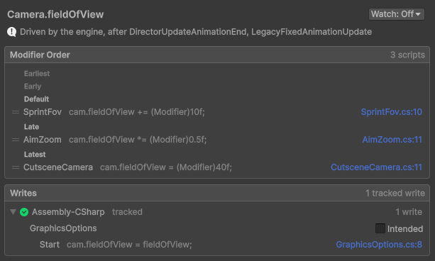

Order modifiers
Each modifier receives the value the modifiers before it left, so their order can change the result: from 1,
adding 1 then doubling gives 4, and doubling then adding 1 gives 3. A modifier that sets a value, such as
x = (Modifier)0f, replaces the result of every modifier before it.
How modifiers are ordered
A member's modifiers apply phase by phase, in this order: Earliest, Early, Default, Late, then Latest. Each script's code
gives its modifiers a phase, and the Concordance window orders the scripts that share one. For example, three
scripts change a camera's field of view:
| Script | Phase | Modifier line |
|---|---|---|
SprintFov | Default | cam.fieldOfView += (Modifier)10f; |
AimZoom | Late | cam.fieldOfView *= (Modifier)0.5f; |
CutsceneCamera | Latest | cam.fieldOfView = (Modifier)40f; |
From a base value of 60, sprinting while aiming gives (60 + 10) × 0.5 = 35. During a cutscene, the field of view is 40, since the cutscene applies last. When the cutscene ends, it's 35 again.
Set a phase in code
To set the phase of a script's modifiers, add a phase attribute to the method or the class that writes them. The
method's attribute wins over the class's, a script without one is in Default, and
Modifier.Stop needs none:
using Concordance;
using UnityEngine;
[ModifierPhase.Late]
public class SpeedLimiter : MonoBehaviour
{
[SerializeField] float maxSpeed = 3f;
[SerializeField] Animator animator;
void Update() => animator.speed = (Modifier)Mathf.Min(animator.speed, maxSpeed); // Late
[ModifierPhase.Latest]
public void Freeze() => animator.speed = (Modifier)0f; // Latest
}Typically, a value the others build on goes early, adjustments stay in
Default, caps go late, and a value that must win, such as a cutscene's, goes in
Latest.
Set the order in the Concordance window
When two or more scripts modify the same member, its Modifier Order in the Concordance window shows them by phase, in the order they apply.

To move a script in a member's order, perform the following steps:
- Go to Tools > Concordance > Open Window, and select the member.
- In its Modifier Order, drag the script by its handle to its new place, in its phase or in another one.
The script is now pinned there: its place in the window wins over its phase in code, so a script you didn't write takes the place you give it, with no edit to its code. To return it to its phase in code, select Unpin.
When two scripts share a phase and their order doesn't matter, such as two multipliers, enable Any Order on the phase's heading.
The order is saved in ProjectSettings/ConcordanceSettings.asset. Commit this file to version control
so your team shares the order.
Resolve order flags
The Concordance window flags a member whose order needs a decision, and Needs a Decision above the member list lists these members:
| Flag | Cause and solution |
|---|---|
| Order not set | Two or more scripts share a phase, and you haven't set their order: until you do, they apply in alphabetical order of their names. Drag one of them into place, or enable Any Order on the phase. |
| Pin to review | A pinned script was removed or renamed, or its phase changed in code. Unpin it, or drag it again. |